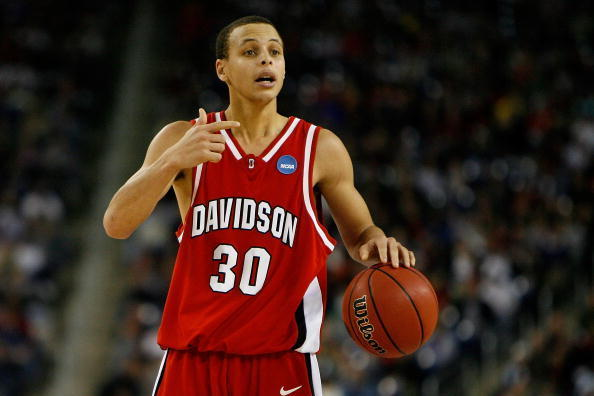

Antetokounmpo ganha mural impressionante de 16m em rua americana
Pivô dos Bucks é homenageado por prefeito de Milwaukee: "Não tem outro melhor para nos representar"
Giannis Antetokounmpo é sensação por onde passa. Com sua performance, o grego deixou sua marca no time dos Bucks e agora se faz presente em um mural de 16 metros de altura localizado na Avenida Oeste de Milwaukee, nos Estados Unidos.
O evento aconteceu de frente para o prédio onde a imagem do pivô foi pintada e contou com a presença de cidadãos de Milwaukee que ovacionaram Antetokounmpo aos gritos de "Bucks in 6!". A pintura foi feita pelo artista Mauricio Ramirez que se sentiu honrado por ser o escolhido para fazer a homenagem para o jogador, que foi MVP há dois anos.
Ultimas Curiosidades

Camisa rara dos Lakers usada por Kobe Bryant pode valer R$ 24M em leilão.

Stephen Curry completa graduação em Sociologia.

NBA House terá espaço temático para os fãs na série final